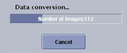

Table 2: Compose Tab Details
| No. | Selections | Description |
|---|---|---|
| 1 | Selection | Selection displays the Patient Name, Exam and Series number, the number of images in the series, the file size of the images with the current compression selection and matrix size. |
| Conversion Format | Conversion Format is a pull-down menu from which you can select the image format for the currently selected data set. Format choices are: JPEG, PNG, AVI, MPEG, and MOV. AVI, MPEG, and MOV are all movietype formats. Choose the format that is compatible with the movie player on your PC or laptop. | |
| 2 | Compression Factor | Compression Factor only applies to JPEG and MPEGs. The lower the number, the less the compression, the higher the image quality but the larger the file. |
| Image/Sec | Image/Sec is movie play back speed and therefore it is only applicable for MPEG, AVI or MOV files. | |
| 3 | Image Range Selection | Image Range Selection allows you to select the images you want to place
in the designated folder. For example, if you have a multi-phase series selected
and all you want is the first phase in the MPEG, then select the range of
images representing phase 1 of your data set. The ability to select a subset of images from the selected series is particularly important if you plan to ftp the files rather than burn a CD. |
| 4 | Annotation | Annotation allows you to set the level of annotation for the images: none, full, partial (a subset of the full annotation) or custom which activates the [Customize] button. Click to display a pop-up window from which you can turn on specific annotation fields. |
| 5 |  Propagate | Series selection buttons allow you to navigate through series within
the exam. Propagate Image Operations allows you to apply the image manipulations (W/L, zoom, scroll) you’ve performed on all images forward from the currently displayed image within a series. |
| 6 | Play/Stop | Click [Play] to preview the MPEG, AVI, or MOV file. Click [Stop] to quit playing the movie. |
| 7 | Quit | Click [Quit] to close the Data Export window. |
| 8 | Image area | The image area displays the current images by scrolling through them in a cine loop. Use the keyboard Page Up and Page Down keys to move through the images manually. |
| 9 | Report Name | Report Name appears at the top of the report that will be created once you execute the data export. It also appears in the Export data list. Typically the patient’s name and type of file are entered as the Report Name. There can be no spaces or characters other than alpha numeric. |
| Folder Name | Folder Name is the name of the folder to which you want to file the Report Name. From the Export tab, you can view the data listed within each folder. The data within a folder is sorted by file type. For example, if you added 10 JPEGs from the T1 series and 20 JPEGs from the T2 series you will see a list of 30 JPEGs in that folder. If you want these JPEGs separated, you must place them in separate folders. | |
| 10 | Anonymous | Click the Anonymous box and the images added to the report will have the patient’s name replaced with Anonymous and the exam number. |
| Add to Report | Add to Report adds the current data set to the report from which you
can either burn the information to a CD-R or ftp it to an IP address. A Data
Conversion progress window appears once you click [Add to Report]. Click [Cancel]
if you want to stop the data conversion.  |